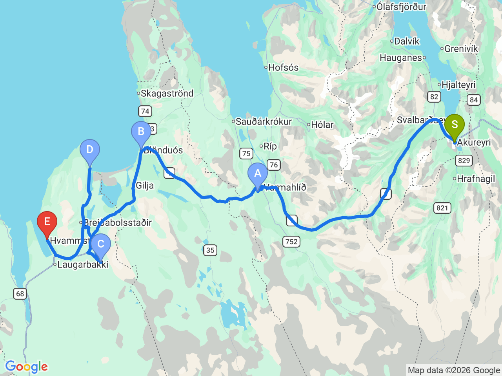

Day 13 · 2026-08-28（五）
冰島環島 Day 8/11
瓦斯半島秘境：草皮教堂・巨人峽谷・海象岩
離開阿克雷里前往瓦斯半島，尋訪冰島最具代表性的海蝕奇岩「海象岩」

行程明細DAY 13
| 時間 | 地點 | 地點 (英文) | 價格 | 預計停留(分鐘) | 備註 |
|---|---|---|---|---|---|
| 08:30 | 飯店出發 | 沿 1 號公路往西前進，進入瓦斯半島區域 | |||
| 09:30 | 草皮教堂 | AVíðimýrarkirkja Turf Church | 免費 | 20 | 建於 1834 年的傳統草皮教堂，是冰島保存最完整的草皮教堂之一，展現冰島傳統建築特色 |
| 10:10 | 布倫迪歐斯 | BBlönduós | 免費 | 30 | 冰島北部的重要城鎮，可加油、購物、用餐及補給，也是前往瓦斯半島的重要中繼站 |
| 11:10 | 巨人峽谷 | CKolugljúfur Canyon | 免費 | 45 | 又稱「巨人峽谷」，以壯觀峽谷及 Kolufossar 瀑布群聞名，遊客相對較少，是北部隱藏版景點 |
| 12:35 | 海象岩 | DHvítserkur | 1100 | 45 | 冰島最具代表性的海蝕岩之一，高約 15 公尺，外型酷似大象、犀牛或巨龍飲水，也是拍攝海豹與日落的熱門地點 |
| 13:50 | 抵達 Albert Guesthouse Check-in |
每日三餐
早餐
未安排
午餐
未安排
Blönduós 附近解決，餐廳尚未確認
晚餐
未安排
Albert Guesthouse 附近解決，餐廳尚未確認
住宿資訊
Albert Guesthouse
📍 Albert GuesthouseCheck-in15:00
位於瓦斯半島的住宿，鄰近 Hvítserkur 與海豹觀察區，適合作為探索 Vatnsnes Peninsula 的住宿據點
本日預估開車里程
235km
阿克雷里 → 草皮教堂 95km → 布倫迪歐斯 30km → 巨人峽谷 30km → 海象岩 50km → Albert Guesthouse 30km（部分路段為概估）
該區域加油站
- N1 Blönduós北部路線中段主要補給站
- N1 Self-service, Hvammstangi瓦斯半島24小時自助站